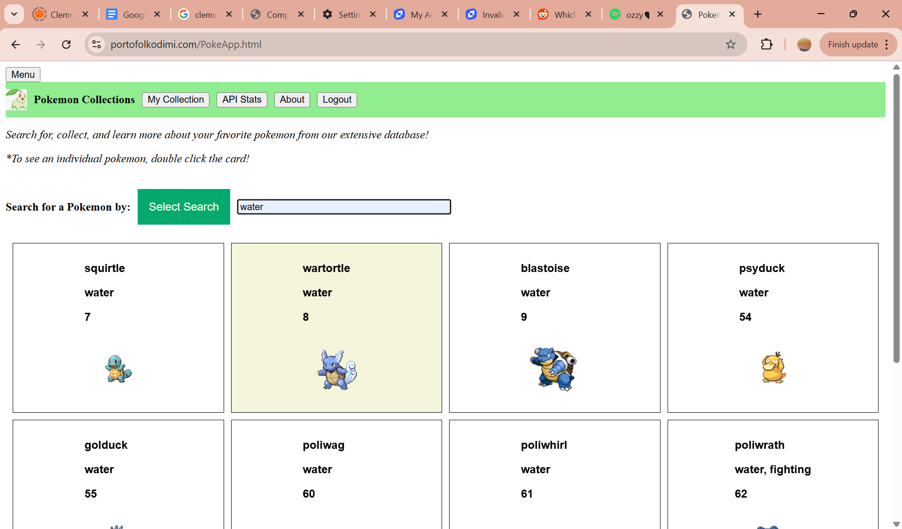
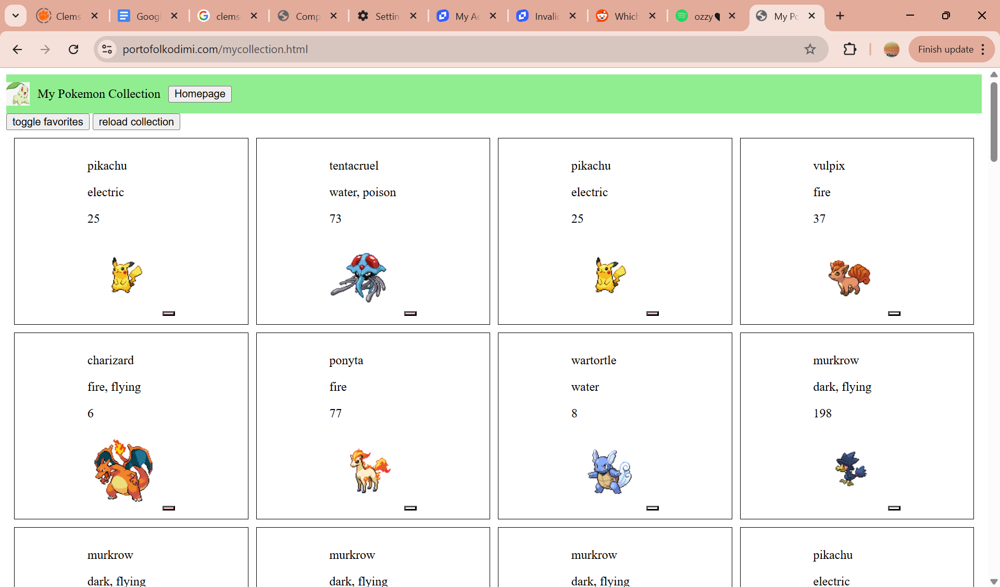
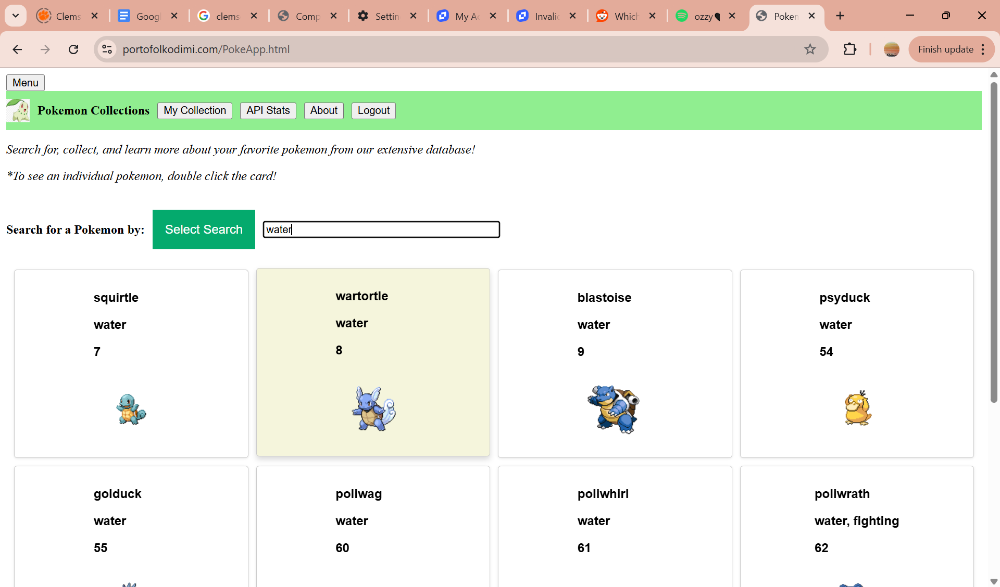
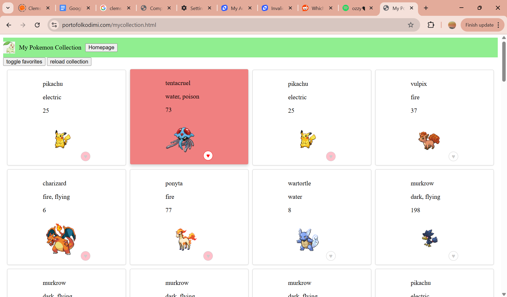

Usability Test Results
Usability Test Results
I had my friend early this morning (April 26) perform this short usability test. We met at the library, and I gave them an overview of the purpose of this app (in my case, the Pokemon Collections App). With this information in mind, I had them perform a series of tasks I created a list of beforehand:
Given this information, she easily found a Pokemon by name (Pikachu) using the search bar. She similarly found the water Pokemon easily, but had trouble knowing if she clicked the item or not to add it to her collection. She easily located her collection, but was not sure how to favorite a Pokemon (since, in her words after figuring it out, those buttons are really small). She also accidentally deleted one entry when trying to favorite an item, since the button was hard to press.
After the test, I identified three actionable improvements:
Here is a screenshot of the Pokemon divs and collection/favorites page before the changes:
before
 Here is a screenshot of the Pokemon divs and collection/favorites page after the changes:
after
 